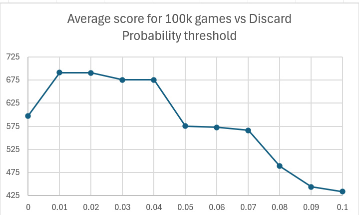

Halatro AI Approach
The premise for my AI is that a rational person would only discard a hand if they have a "good" probability of getting a hand with a higher score than their current hand.
Calculating Probability of a Better Hand
- We should be able to calculate the exact probability of getting a hand with a higher score by generating all possible hands and scoring them
- We then count the number of hands with scores higher than our current hand and then divide that by the total number of combinations
- Since we have access to the previously played/discarded cards this probability would reflect the current state of the game as we would exclude played hands from the list of combinations
- However this would not be feasable as it would take too long to compute the scores for all of these combinations
For example, at the start of the game when no cards have been played we would need to compute the scores for x hands, where \[x = \binom {52} {5} = 2598960 \]
Estimating Probabilitties
- To work around this limitation I estimate the probability of getting a higher scoring hand by estimating the probability of getting a better hand type.
- The following calculations are used by
probabilityOfHandto get the probabilities of getting certain hand types. - These Probabilitties are then summed by
probabilityOfImprovementto give us the estimated probability of getting a higher scoring hand
Probability Of
None- Calculating the probability of getting a None is not important as it shouldn never happen if the game is working correctly
- Hence we just return zero
Probability Of
HighCard- Calculating the probability of getting a HighCard is not important as it is the worst Hand Type so we don't care.
- Hence we just return zero
Probability Of
Pair,ThreeOfAKindandFourOfAKind- To calculate the probability of getting w cards of the same rank when we sample without replacement z times from a population of size x with y
cards of the desired rank in the total population we use the Hypergeometric Distribution. (For
Pair,ThreeOfAKindandFourOfAKindw is 2, 3 and 4 respectively)
- We have 13 ranks... as we play the game these ranks will not all have the same number of cards in the population. This means that to calculate the probability of
a
Pair,ThreeOfAKindandFourOfAKindwe should sum the probabilities given from the Hypergeometric Distribution for every rank
Probability Of
Flush- The same idea behind the probability for
Pair,ThreeOfAKindandFourOfAKindbut with suits instead of ranks
Probability Of
TwoPair- We Generate all possible combinations of two ranks
- We then filter out the combinations where both ranks do not have a minimum of 2 cards of that rank in the population
- For each rank pair (x, y) we calculate the number of ways of forming a
TwoPairby: \[\binom x 2 * \binom y 2 * (n-x-y)\], where n is the total number of cards in the population
Probability Of
FullHouse- We Generate all possible combinations of two ranks
- We then filter out the combinations where one rank has less than 2 cards of that rank in the population and the other rank has less than 3 cards of that rank in the population
- For each rank pair (x, y) we calculate the number of ways of forming a
FullHouseby: \[\binom x 2 * \binom y 3 \]
Probability Of
Straight- We calculate the total number of ways we can make a
Straightand convert this to a probabaility by dividing by the total number of cards in the population
Probability Of
StraightFlush- Probability Of
Flushmultiplied by Probability OfStraight
Probability Of
RoyalFlush- We calculate the total number of ways we can make a
RoyalFlushand convert this to a probabaility by dividing by the total number of cards in the population
Chosing Which Cards to Discard
To keep things simple my AI will discard as many "bad" cards as possible. I found that counting anything with a rank less than Ten as a "bad" card worked well
What is a "good" Probability
- To find a value for what would be considered a good probability I ran the AI for 100,000 runs and varied the minimum probability needed for a discard each time
- I found that 0.01 gave the best results (average score of 691.05)
- This result was interesting as it showed that the game of Halatro favoured high risk players on average
